HTML Website MakerWeak signals are early indicators of emerging trends, disruptions, or changes that may have significant impacts in the future. They are often subtle and not immediately obvious, requiring careful observation and interpretation to recognize their significance. Weak signals can come from various sources such as consumer behavior, technological advancements, social movements, or geopolitical events.
Identifying weak signals involves paying attention to subtle shifts in patterns, behaviors, or events that might seem insignificant at first but could potentially grow in importance over time. Analyzing weak signals can help organizations and individuals anticipate future trends, identify opportunities and risks, and adapt their strategies accordingly.
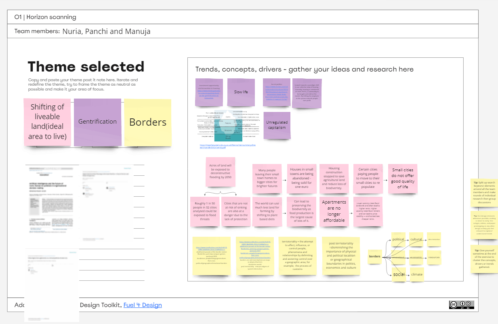
Researching
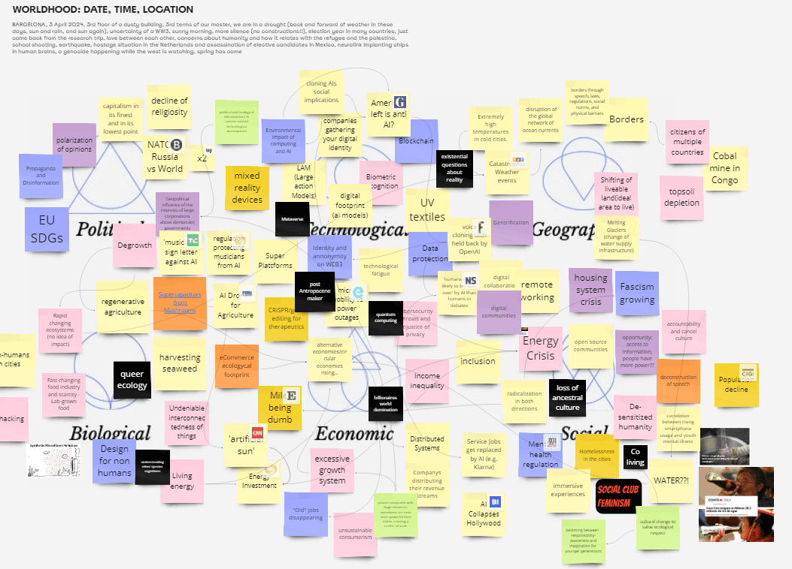
Brainstorming
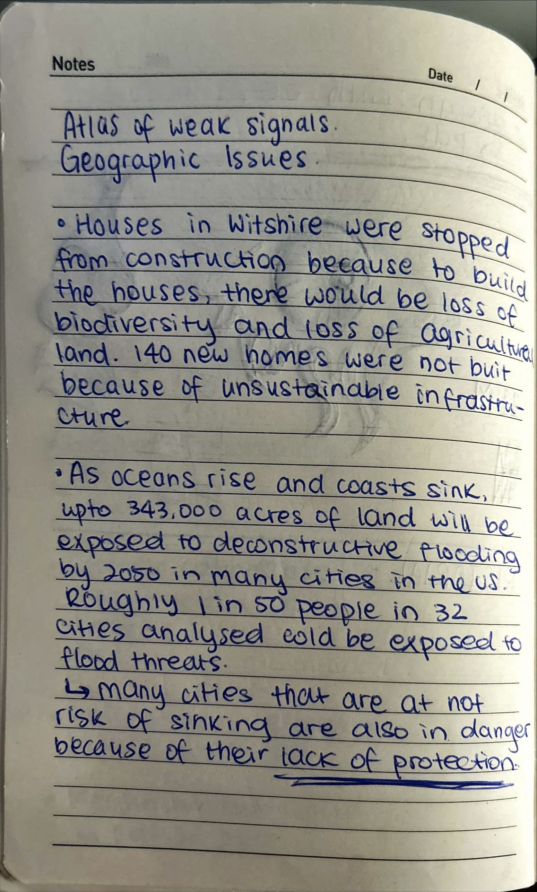
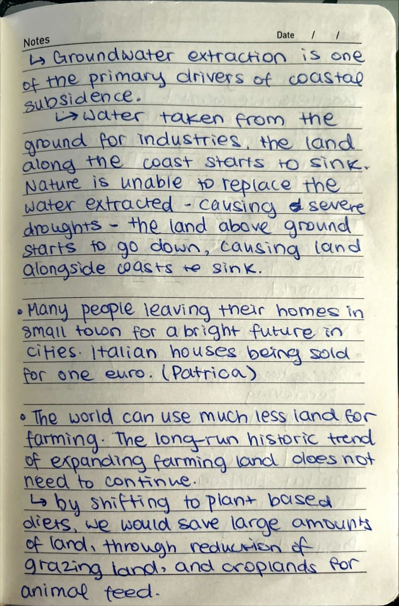
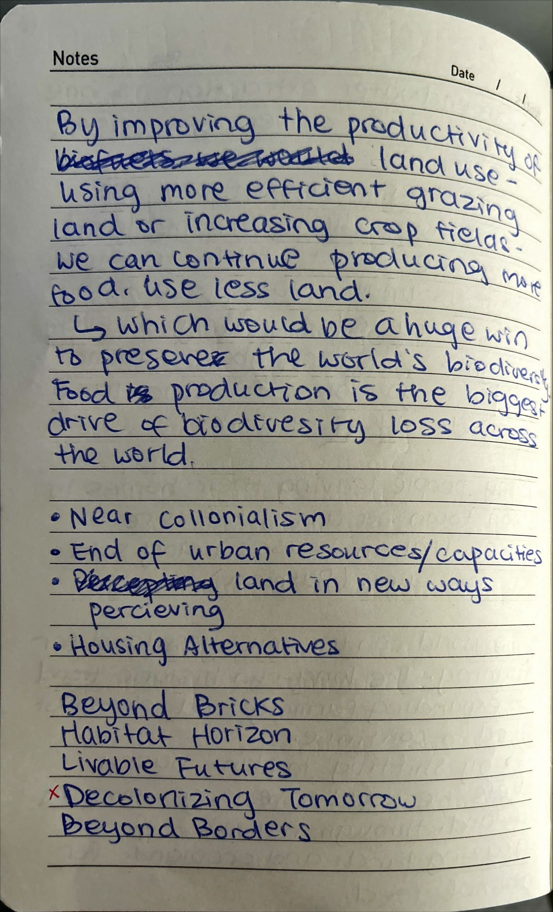
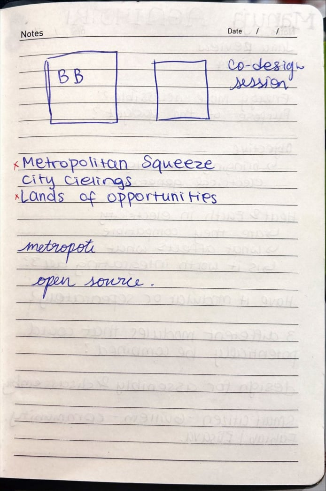
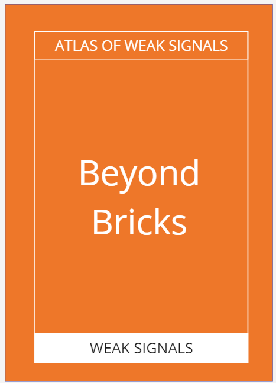
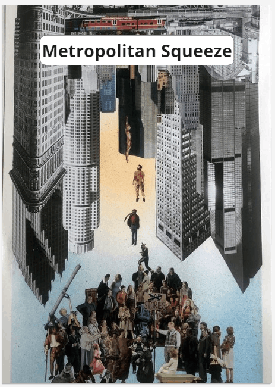
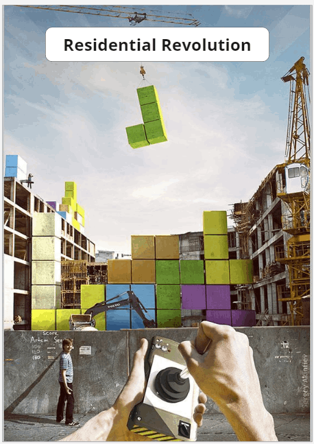
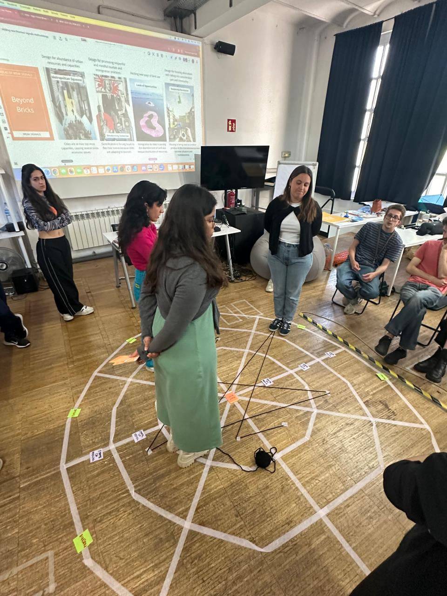
Positioning the cards
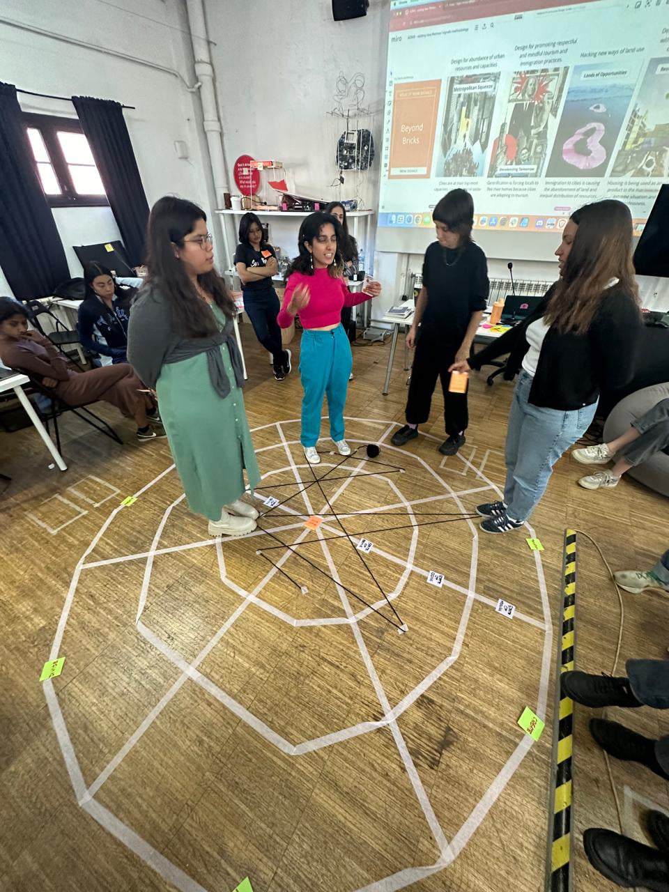
Positioning the cards
Participating in the creation of a new atlas of weak signals focusing on gentrification and geographic/city life issues was not only an intellectually stimulating activity but also a deeply enriching experience.
Delving into the nuances of gentrification and its multifaceted impact on communities provided valuable insights into the complex interplay between urban development, social dynamics, and economic forces. Through extensive research, I had the opportunity to explore the various dimensions of gentrification, from its historical roots to its contemporary manifestations in different cities around the world.
What made this activity particularly enjoyable was the opportunity to uncover weak signals - those subtle hints of emerging trends and shifts in urban landscapes that often go unnoticed amidst the hustle and bustle of everyday life. By meticulously analyzing data, conducting interviews, and observing patterns, I was able to identify signals that hinted at potential future trajectories of gentrification and its implications for city life.
Moreover, the process of creating the atlas allowed me to appreciate the depth of 'beyond bricks' - the idea that cities are not just physical spaces but vibrant ecosystems shaped by social, cultural, and economic dynamics. It reinforced the notion that understanding urban issues requires looking beyond surface-level observations and delving into the underlying factors driving change.
Overall, this activity was not only fun but also immensely rewarding. It challenged me to think critically, conduct thorough research, and embrace the complexity of urban issues. Moving forward, I am excited to continue exploring the ever-evolving landscape of cities and contribute to creating more inclusive, equitable, and sustainable urban environments.
HTML Website Maker